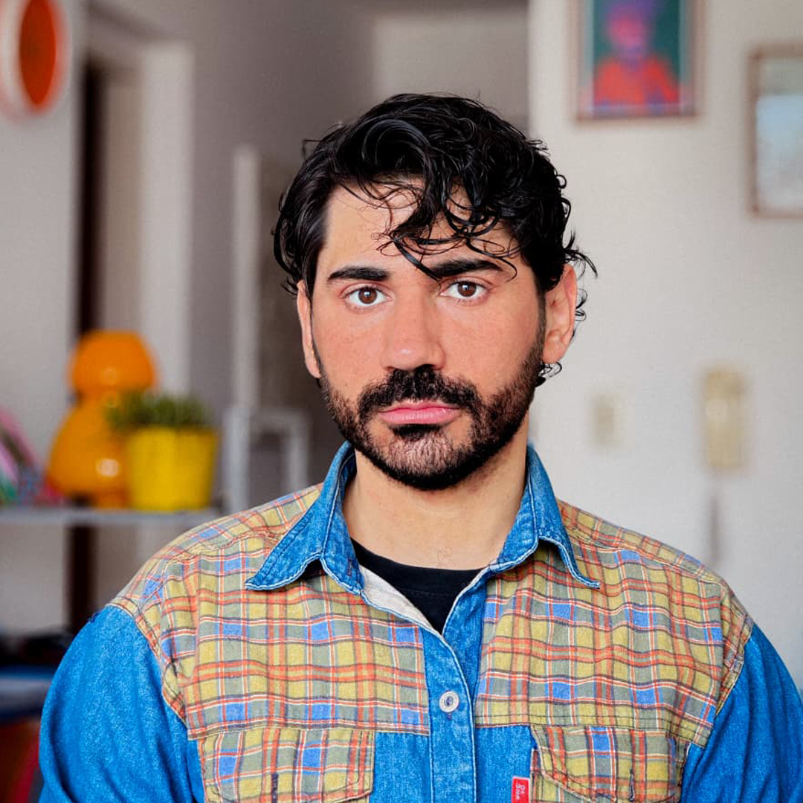

Rosario · Motion · Art Direction · Graphic Design

Editor de video con base en Rosario, Argentina. Pasé por agencias trabajando para clientes
locales, de Buenos Aires y de Miami — y también en formato freelance. Uso Premiere Pro y
After Effects como herramientas de trabajo diario.
Soy diseñador gráfico, lo que me permite unir criterio visual con narrativa audiovisual.
Estudié creatividad publicitaria como director de arte, entonces puedo entender integralmente cómo funciona
el universo de la comunicación, la estética y el ritmo de cada pieza. La edición de video no es solo oficio:
es lo que más me apasiona.